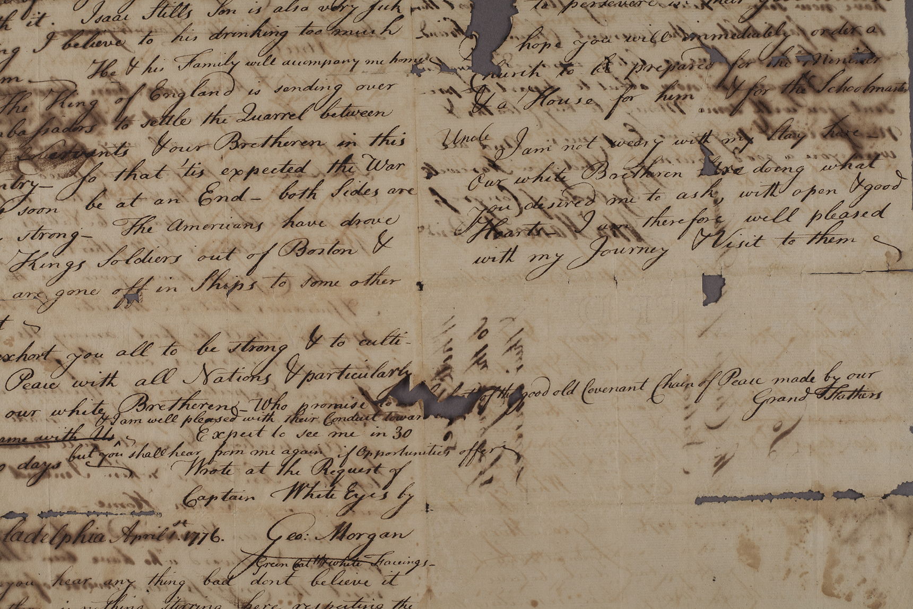

Conventional paper documents have two primary elements: a paper support and the media (e.g. ink, graphite) that "carries" information on that support. Ink is the most common medium for printed and handwritten documents typically found in archives. Other handwritten media include graphite pencil and wax-based pencil/crayon. Whether for commercial, official, or personal effect, humans have been producing media to write, draw, record, and print for several millennia. Characteristics of ink and other media vary depending on their composition and method of formulation. As such, the stability of media has a long-term effect on its paper support, and vice versa. It should be assumed that all media has potential to fade under extreme light exposure and that ink will bleed or transfer if exposed to moisture.
Blue ink in paper fibers: magnified line drawn by a fountain pen. Image by Wikimedia Commons user Tobias R., available under a Creative Commons Attribution-ShareAlike license (CC BY-SA 2.5).
Components
Ink and many pencil media are composed of three primary elements: colorants, carriers, and additives.
Colorants largely determine the color and light sensitivity of the media. Much of the preservation risk depends on whether it is composed of dye or pigment. Black has historically been "carbon black," a highly stable pigment derived from elemental carbon. Any dye color media is at risk of fading on exposure to light; many modern colors, however, can be achieved through the use of pigments. Pigments are generally preferred over inks because they are more stable; but, they are also more expensive and have a more limited color range.
Carriers bond the pigment or dye and allow them to be fixed onto the paper surface. In the past, natural oils or gums would perform this function. Today, synthetic and natural resins are in the mix. The balance of these compounds will often vary based on the application. In the case of ink, a carrier/binder substance dictates the ease of flow.
Additives are generally used to tweak the performance of the media in order to control fluidity, drying time, viscosity, tack, brightness, transparency, etc.
Common Types of Media
Types listed below are not mutually exclusive. For instance, a carbon black ink is also pigment-based. Relationships like this are represented through links in the Related field.
Carbon black pigment mound. Image by Wikimedia Commons user FK1954, available in the public domain.
Carbon black ink (India ink) being applied to paper. Image by Flickr user Mark, available under a Creative Commons Attribution-NonCommercial license (CC BY-NC 2.0).
Carbon black printing ink on paper. Image by Flickr user PhotoGraham, available under a Creative Commons Attribution-NonCommercial-ShareAlike license (CC BY-NC-SA 2.0).
Carbon pigment ink is the earliest type of ink. It can be identified by its deep black color and occasional slight surface sheen. Historically, black pigment was derived from charcoal (carbonized wood) and later from fine soot (producing a similar ink referred to as lamp black) mixed with a gum arabic or oil carrier. Carbon printing ink is very common in books and text forms like letterpress, typescript [typewriter ink], and offset lithography. As this ink was often oil-based, its printed text will often exhibit slight toning beyond its edges ("halo" effect) and/or shadow onto adjacent pages. Good quality carbon inks do not discolor with age, but they can smudge in high humidity since they are slightly water soluble. Poor quality carbon inks may turn a brown color over time. Additionally, these inks can have flaking problems, especially if they are thickly applied or applied to a polished (highly calendered) paper.
Pigment-Based Ink
Vermillon red pigment mound. This very fine pigment colorant is suspended in a carrier. When applied to a paper surface, it embeds itself deeply within the paper fibers. Image by Wikimedia Commons user Stephhzz, available under a Creative Commons Attribution-ShareAlike license (CC BY-SA 3.0).
Carbon black printing ink on paper. Printing ink has historically used gum arabic, oils, and resins to carry the pigment. Modern carbon printing ink is quite stable. Image by Flickr user PhotoGraham, available under a Creative Commons Attribution-NonCommercial-ShareAlike license (CC BY-NC-SA 2.0).
Most commercial printing uses pigmented ink colorants in which color is achieved by finely ground pigment particles rather than by the dyes used in writing ink and in most inkjet printing. Comprised of organic and inorganic elements, pigments come in black, white, and a wide range of colors, many of which can be blended to achieve a particular ink quality. Black printing ink is exceptionally stable. White and black pigments are commonly mixed with other color pigments. White pigment can be opaque or translucent. Although they yield a more muted color range than dyes, colored pigments are relatively strong, both in terms of light stability and resistance to environmental factors (e.g. water exposure, high humidity).
Iron Gall Ink
Iron gall ink. Image by Flickr user preservationgal, available under a Creative Commons Attribution-NonCommercial-ShareAlike 2.0 Generic license (CC BY-NC-SA 2.0)

Iron gall ink with haloing and burn-through. Taken from an image of Capt. White Eyes Letter to US Congress from the Illinois History and Lincoln Collection. Image courtesy of the University of Illinois Board of Trustees.
Synonym
Iron gallotannate ink
Dates
5th century C.E. – early 20th century
Color
Black-brown; fades to reddish brown
Description
Iron gall (iron gallotannate) ink was the most predominant type of ink for many centuries as it was inexpensive, could be easily produced at home, and, most significantly, was ideal for use on parchment/vellum. Due to its abundance, iron gall ink was popular with architects, map makers, and artists from the seventeenth to nineteenth century. The manufacture of iron gall ink involves mixing tannic acids (oak-tree galls) with vitriol (iron sulfate). Iron gall inks inherently contain sulfuric acid, which can lead to corrosion and disintegration of the support. Likewise, oxidation of the iron compounds present in the ink may lead to ink corrosion, also known as acid hydrolysis. Iron gall ink was also used in copybook applications when mixed with water-soluble dyes (e.g. as was commonly done with blue aniline dye after around 1860). These delicate copy papers will be especially susceptible to the effects of corrosion.
Dye-Based Ink
Dye-based fountain pen ink: a blot of Quink ink on damp paper. The blue dye has separated from other ink components, which are peach–colored. Image by Wikimedia Commons user Mburger64, available under a Creative Commons Attribution-ShareAlike license (CC BY-SA 3.0)
Dye-based, water-soluble black ink. Not all dye-based ink is colored. Image by Flickr user Toshiyuki IMAI, available under a Creative Commons Attribution-ShareAlike 2.0 Generic license (CC BY-SA 2.0)
Dates
c. 1860 – present
Color
Various
Description
Dye color ink is used primarily in writing instruments, such as in ball-point and felt-tip pens, but many inkjet printers also use dyed inks. Synthetic aniline dye emerged in the mid-nineteenth century as a cheap and broadly useful colorant, and it was quickly adopted for the letterpress copy process precisely because of its water solubility, which enabled easier transfer of content from a source letter to its copy paper. Today, dye inks appear in many modern color pen and marker inks. The most common issues with dye inks include their poor light stability and their high sensitivity to moisture. If an object becomes wet or damp, dye color inks can bleed or run. In addition to dyes, many "permanent" pens contain solvent-soluble, metallized inks that are comprised of iron sulfate, gallic, and tannic acids. Washing or administering solvents to documents made using these pens could potentially remove their ink without leaving a trace. To better preserve this media and its support material, try to avoid gratuitous light exposure and moisture (i.e. high humidity and water).
Typewriter Ribbon Ink
Typewriter ribbon. Derived from image by Flickr user CoCreatr, available under a Creative Commons Attribution-ShareAlike 2.0 Generic license (CC BY-SA 2.0)
Typewriter ribbon noise. Look at the fabric-like pattern around the typewritten characters. This is from a direct impact of the ribbon, and this sets an original document from most carbon copies.
Although typewriter hardware and mechanics have changed considerably over time, the basic principles of ink composition are relatively stable. Black ribbon ink used by mechanical typewriters is very similar to carbon printing ink, although it often includes wax or glycerine additives. Ribbon ink of the electric typewriter era is slightly different because it incorporates myriad combinations of pigments, waxes, and oils. Colored typewriter inks employ a mix of dye colorants, often with a trace of carbon pigment to enhance opacity.
Through the impact of the typewriter’s glyphs, the ink-impregnated ribbon transfers characters to the paper surface. The ink then dries as it penetrates the paper fibers. While the carbon copy process does produce a similar typescript, it will be of lower contrast and quality. The reproduction can also be erased since carbon tissue ink merely sits on the copy paper surface. Numerous reproductive print processes and formats are commonly mistaken for original typewritten documents, including hectographs, stencil copies, typography, and lithography. The general rule of black ink stability applies to most of these processes.
Ball-Point Pen
Ball-point pen ink. Image by Flickr user photosteve101, available under a Creative Commons Attribution 2.0 Generic license (CC BY 2.0).
Although the original ball-point was invented and patented in 1888, it was not until the mid-1940s that improved ball-point pens were widely available. Although the body of the pen has remained virtually unaltered since then, its ink composition has changed significantly. Ball-point pens can appear in a multitude of colors, but they are typically black, blue, and red. The earliest inks were viscous, oil-based dye inks that tended to remain sticky on paper. As a result, the proportion of colorants, solvents, and other additives have been adjusted in order to improve the ink flow and line quality. For many decades, dye was the preferred colorant, since pigment originally tended to clog the ball-bearing tip and would not easily dissolve in solvents added to hasten the drying process. Modern ball-point inks, however, contain soluble dye and/or insoluble pigment colorants with quick-dry or glycol-enhanced additives. The common weaknesses of ball-point ink are its poor light stability and water solubility. Its inability to stay color-fast causes effects like black fading to blue and red fading to pink. With dye-based inks, avoid light exposure, moisture (e.g. high humidity), and solvent treatments.
Felt-Tip Pen / Marker
Dye-based ink from felt-tip marker. Image by Flickr user UnknownNet Photography, available under a Creative Commons Attribution-ShareAlike 2.0 Generic license (CC BY-SA 2.0)
There are two types of felt-tipped pens: water-based and solvent-based. As water and isopropyl alcohol are used to dissolve the dye within, exposure to these substances will cause ink to run and bleed. These pens span a wide spectrum of colors. In general, all dye-based ink is inherently acidic and is prone to fading when exposed to light. Certain colors like yellow are more stable, while others, such as pink, purple, violet, and beige, are more sensitive to light. Some color formulations are known to fade even in the dark. Felt-tipped pens and markers are designed purely for commercial purposes and are not meant to be permanent by any stretch.
Other Media
Graphite
Graphite pencil manuscript. Image by Flickr user Joanna Bourne, available under a Creative Commons Attribution 2.0 Generic license (CC BY 2.0.
Dates
c. 1655 – present
Color
Gray-black
Description
Pencil graphite is composed of natural carbon and clay. Graphite is a stable, friable medium that is prone to smudging and mechanical abrasion. Depending on the grade (hard to soft) of the graphite, the tone will vary from light gray to black. The graphite pencil was patented in 1795 by Nicholas-Jacques Conte, who blended clays, graphite, and water into a dough that could then be fired and encased in wood. This process is still used today to manufacture graphite pencils. Encapsulation is never recommended for friable or loose media like graphite and charcoal because of the static charge associated with plastic enclosures.
Wax-Based Pencil / Crayon
Wax pencil. Image by Wikimedia Commons user CarolSpears, available under a Creative Commons Attribution-ShareAlike license (CC BY-SA 3.0)
The history of wax-based media dates back to the late eighteenth century with the invention of the lithographic crayon and grease pencils. During the nineteenth century, the use of lithographic crayons and grease pencils shifted when people began utilizing them as a writing and drawing medium. The nineteenth century development of petroleum-based waxes and oil soluble dyes also spurred the introduction of more versatile and reliable media, including the wax crayon and the colored pencil. Today, the term crayon or colored pencil is often used ambiguously, referring to any writing/drawing medium in stick form regardless of the nature of its binder.
Colored Pencil
Colored pencil mandala. Image by Flickr user Marianna Spiritakis, available under a Creative CommonsAttribution-NonCommercial-NoDerivs 2.0 Generic (CC BY-NC-ND 2.0)
Colored pencils are typically wax-based and contain a mixture of colored pigments, additives, and supplementary binding agents. Lightfastness and chromatic richness have improved over time as high-quality pigments have been introduced in greater concentrations. Early forms of the colored pencil were available in the early nineteenth century, although highly pigmented pencils did not come about until the twentieth century, when manufacturers began to produce water-soluble pencils ("watercolor" pencils) and oil-based pencils for artistic applications. These pencils are at greater risk of bleeding, running, and transferring to adjacent materials when exposed to moisture (i.e. water and high humidity) and/or solvents. All colored pencils should be assumed solvent-soluble. Colored pencil found on archival documents (not artwork) will likely contain lower quality pigment and therefore will be more susceptible to light fading. Be aware that watercolor pencils by design are extremely water-sensitive. Once on paper, they will appear indistinguishable from water-insoluble pencils until exposed to moisture, which will cause it to feather and bleed wildly.
Copying Pencil
Bleeding violet copy pencil in notebook. Image courtesy of the University of Illinois Board of Trustees.
Dates
c. 1860 – 1930s
Color
Various; Violet and blue common
Description
First introduced in the 1860s, copying pencils were developed primarily for use with the letterbook and roller copying process. Additionally, copying pencils were marketed for producing a more indelible mark than that of the graphite pencil. The component materials of a copying pencil includes graphite, clay, and a colorant typically made with aniline dye. Aniline is extremely light sensitive and water-soluble. Aniline colorants are commonly violet or blue, but they can be found in any color ink for documents and copies produced after the mid-1800s. Visually, it can be very difficult to distinguish between standard graphite pencil and copying pencil markings. The presence of aniline dye in copying pencils, however, indicates that these markings are water and alcohol soluble.